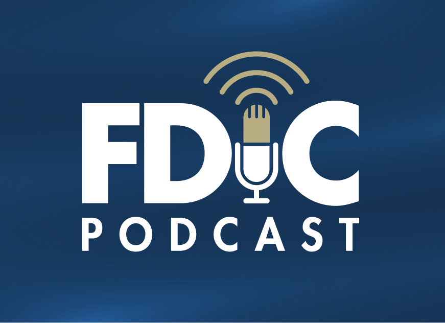

News
Clear, reliable communication is vital to the FDIC’s mission to maintain stability and public confidence in the nation's financial system. The FDIC publishes regular updates on agency activities and banking developments in the banking system, the latest FDIC research and analysis, and educational information for consumers. Follow our news stories, read speeches and testimony by FDIC officers and directors, learn about important policy changes, and get the details on upcoming FDIC conferences and events.
FDIC Calendar
Press Releases
Videos
VIDEO / July 22, 2021
Advisory Committee on Community Banking (CBAC) VirtualPodcasts
Among the FDIC’s important missions is to help consumers understand and access our financial system so they can build a legacy for themselves and their families. The FDIC Podcast seeks to untangle the myths and mystery of the banking world and to shed light on how every person can become part of the financial fabric of this country. Subscribe for email reminders.
December 15, 2021
A Woman of Many FirstBorn in a small Texas town, Arleas Upton Kea came to the FDIC nearly 40 years ago as a young attorney and rose through the agency’s senior ranks in good times and during moments of crisis. Meet Arleas and her incredible legacy of public service.